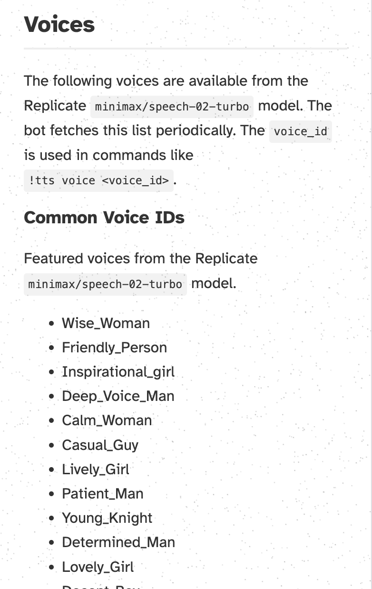
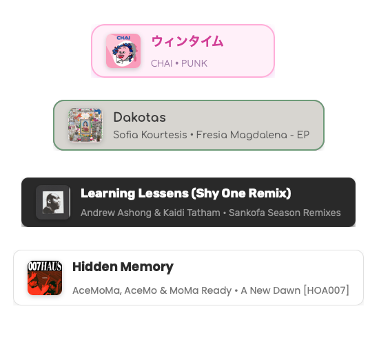
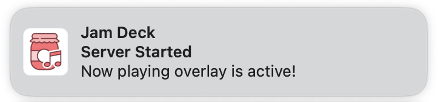
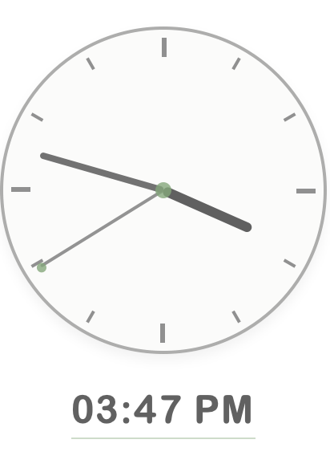
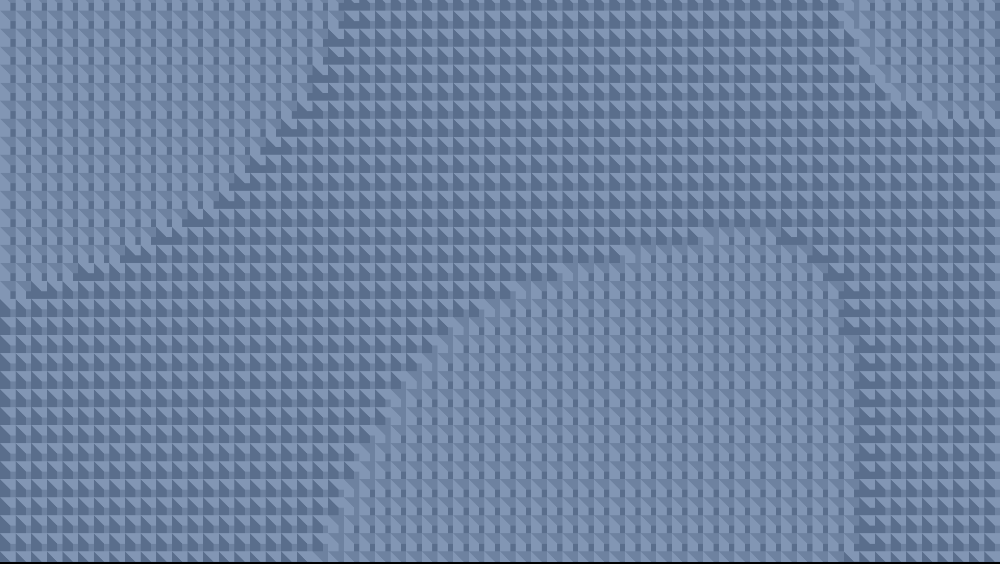
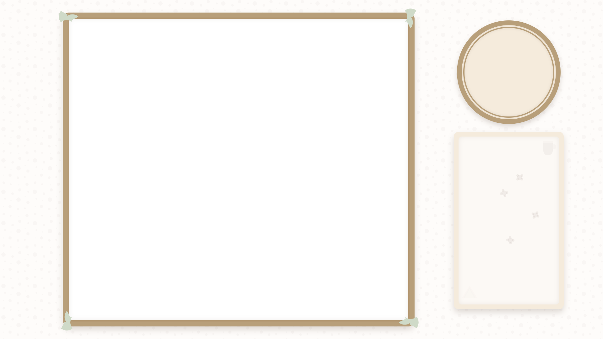
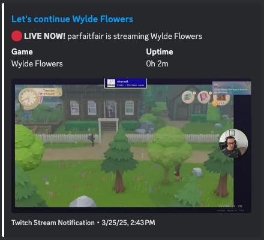

WildcatSage
AI-powered chatbot for Twitch streams with real-time context awareness and natural language understanding
Currently invite-only. Request access.
- Node.js
- Twitch API
- Google Gemini
- Google Cloud Run
- Jest
- GitHub Actions
![Screenshot of WildcatSage's command list interface displaying a table of bot commands. The table has three columns: Command, Description, and Usage. Featured commands include !ask/!sage for AI-powered questions, !game for game information, !search for web queries, !translate for message translation, !geo for geography games, and !ping for bot status. The image crops the table in the middle of the !translate command row. Each command row shows its syntax and usage examples, with some commands having moderator-specific options. The interface uses a clean, minimalist design with a white background and dark text.](assets/images/screenshots/botcommands.png)
QA Engineer · AI Testing & Automation
6+ years testing commercial software and three years testing AI features in production. I build and test the free, open source streaming tools below, where 1,400+ automated tests gate every deploy to live LLM and text-to-speech services.
![This illustration depicts Shirokuma (Polar Bear), a character from the anime Shirokuma Cafe (Polar Bear Cafe). He's standing upright wearing a blue patterned scarf or neckerchief tied around his neck. He's holding a tray with an ube-flavored parfait in a tall glass - the dessert is light purple in color and garnished with flowers. Shirokuma has a gentle, pleasant expression and is positioned in front of his own cafe building with green foliage visible to the side. The art style is colorful and cheerful, with a warm, inviting atmosphere typical of the anime's lighthearted tone.](assets/images/PolarBearCafeFin.jpg)
Shirokuma (Polar Bear) from Shirokuma Cafe serving ube parfait in his signature blue neckerchief
Give the polar bear a new outfit
Artwork by Runnerbean, used with permission
Each outfit is generated by Nano Banana 2 (Gemini 3.1 Flash Image) through a small, rate-limited Node.js server on Cloud Run. Runnerbean okayed the AI variations, and the paid API key means Google doesn't train on the art or the outfits. Server code
Home of WildcatSage, WildcatTTS, and Chat Overlay: Twitch streamer tools for chat, text-to-speech, and an AI knowledge bot.
AI-powered chatbot for Twitch streams with real-time context awareness and natural language understanding
Currently invite-only. Request access.
Twitch Text-to-Speech bot and OBS browser source that reads chat and events aloud. Customizable voices, emotions, and other preferences on per-user and per-channel basis.
Currently invite-only. Request access.

command in Twitch chat." class="screenshot">Chat Overlay for Twitch and OBS featuring an AI-powered custom theme generator
![Screenshot of a stylized chat overlay featuring an elegant wavy line pattern background in soft gray tones. The chat messages are displayed with clean typography, where usernames appear in a bold blue font followed by message text in a darker shade. The layout includes subtle message containers with rounded corners and a semi-transparent backdrop, creating a layered effect against the patterned background. Each message is clearly separated with consistent spacing, demonstrating the overlay's minimal yet refined design approach.](assets/images/screenshots/chat.png)
![Screenshot showing a side-by-side view of both the chat window and its theme settings panel. On the left is the chat window with the wavy pattern background and example messages. On the right is the normally-overlapping settings panel pulled out to show the AI Theme Generator interface. The settings panel features the theme title 'Serene Mist', navigation arrows, a 'Game or Vibe' input field (showing 'Morning mist Japanese zen garden'), a purple 'Generate Theme' button, and a checkbox for background image generation. This split view demonstrates how the settings panel would typically float over the chat window during theme customization.](assets/images/screenshots/chat-theme-generator.png)
Apple Music Stream Now Playing Widget for OBS (macOS/Apple Music only)


Customizable clock overlay for OBS streams and recordings

Collection of static browser overlays for OBS, regularly updated with new components


Notification system to alert when you go live on Twitch, with Discord integration

Hiring, collaboration, access requests for WildcatSage or WildcatTTS, or just saying hello.